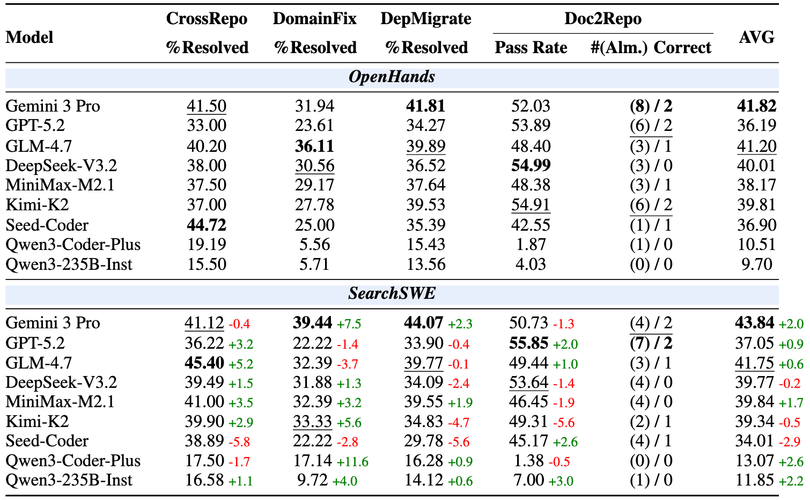

Overview of BeyondSWE. Our benchmark extends evaluation along two dimensions — knowledge scope and resolution scope: CrossRepo and DomainFix expand knowledge scope by requiring external software resources and domain expertise respectively; DepMigrate and Doc2Repo expand resolution scope from localized patches to codebase-wide transformations.
Abstract
Current benchmarks for code agents primarily assess narrow, repository‑specific fixes, overlooking critical real‑world challenges such as cross‑repository reasoning, domain‑specialized problem solving, dependency‑driven migration, and full‑repository generation. To address this gap, we introduce BeyondSWE, a comprehensive benchmark that broadens existing evaluations along two axes—resolution scope and knowledge scope—using 500 real‑world instances across four distinct settings. Experimental results reveal a significant capability gap: even frontier models plateau below 45% success, and no single model performs consistently across task types. To systematically investigate the role of external knowledge, we develop SearchSWE, a framework that integrates deep search with coding abilities. Our experiments show that search augmentation yields inconsistent gains and can in some cases degrade performance, highlighting the difficulty of emulating developer‑like workflows that interleave search and reasoning during coding tasks. This work offers both a realistic, challenging evaluation benchmark and a flexible framework to advance research toward more capable code agents.
Benchmark Tasks
Our benchmark evaluates real-world code agents along complementary task families, spanning broader knowledge requirements and larger resolution scopes.
Overview of SearchSWE Framework
-
Dual-context design
- 🐳 Local context: Docker environment for repo exploration, command execution, and testing.
- 🌎 Global context: access to external web information.
-
Two external tools
- 🔎 Search tool: query web search engines for relevant resources.
- 🌐 Browser tool: retrieve and summarize webpages given a URL and goal.
- Autonomous reasoning: the agent decides when and how to use external information during problem solving.
Overview of The SearchSWE Framework. Left: the agent solves coding tasks by iteratively accessing external resources (search, browser) and local context (Docker container), with a blocklist preventing cheating. Right: evaluation applies patches to a fresh container and runs P2P/F2P tests for verification.
Evaluation Results
We evaluate frontier models with SearchSWE and compare against the OpenHands baseline. Results highlight a key gap: search and coding abilities have improved independently, but their integration remains inconsistent in practice.
- ✅ When search helps: it can provide actionable external context (e.g., documentation, migration guides), yielding gains on some model–task pairs (notably DomainFix and DepMigrate for strong general-purpose models).
- ❌ When search hurts: benefits are not universal—irrelevant or mismatched retrieval can inject noise and reduce performance (some code-specialized models degrade under search).
- 📊 Task-level patterns: CrossRepo tends to benefit broadly, while Doc2Repo often suffers because fragmented search evidence can disrupt coherent end-to-end design.
- 😭 Why it’s hard: 1. the information landscape ( the knowledge needed for code tasks is often embedded in raw artifacts); 2. version consistency (local environments often pin older versions); 3. the noise introduced by search can actively harm code generation.
- 🛎️ Implication: combining external information seeking with code reasoning is essential but does not emerge automatically—BeyondSWE is designed to measure and drive progress on this integration.
Main results on BeyondSWE. Multiple frontier models evaluated with OpenHands and SearchSWE. Green / Red values indicate SearchSWE’s gains/drops relative to OpenHands. Bold and underlined denote the best and second-best results within each framework.
Qualitative Analysis of Search-Code Disconnect
We investigated why search augmentation does not consistently translate to coding performance, and identify specific failure modes where the integration of external knowledge breaks down.
Failure Mode 1
The Information Landscape Gap
Failure Mode 2
Version consistency
Failure Mode 3
Search Noise & Semantic Drift
Case Study
Citation
If you find our work helpful, please cite us:
@article{beyondswe2026,
title={BeyondSWE: Can Current Code Agent Survive Beyond
Single-Repo Bug Fixing?},
author={Author One and Author Two and Author Three and Author Four},
journal={arXiv preprint arXiv:xxxx.xxxxx},
year={2026}
}